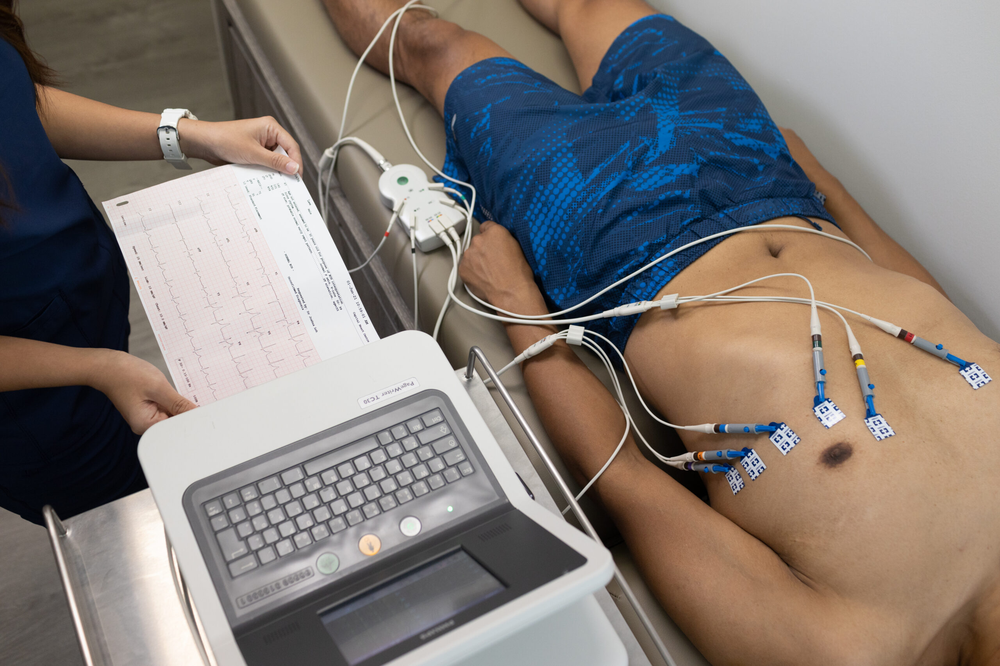

Electrocardiogram (ECG)
An Electrocardiogram (ECG or EKG) is a painless and non-invasive test that records the electrical activity of the heart. It helps doctors detect irregularities in heart rhythm, rate, and structure.
Why You Might Need an ECG
- Chest pain or shortness of breath
- Irregular heartbeat or palpitations
- Pre-employment or annual physical exams
- Monitoring of heart disease or hypertension
- Pre-surgical evaluation
Quick Fact: An ECG only takes a few minutes and provides your doctor with valuable insights into your heart’s electrical activity.
How the ECG Test Works

During an ECG, small electrodes are placed on your chest, arms, and legs. The test measures the heart’s electrical impulses, which appear as wave patterns on a monitor or printout for medical evaluation.
Preparation and Safety
- No fasting is needed before an ECG.
- Avoid lotions or oils on the chest area before testing.
- The test is completely safe, quick, and causes no discomfort.